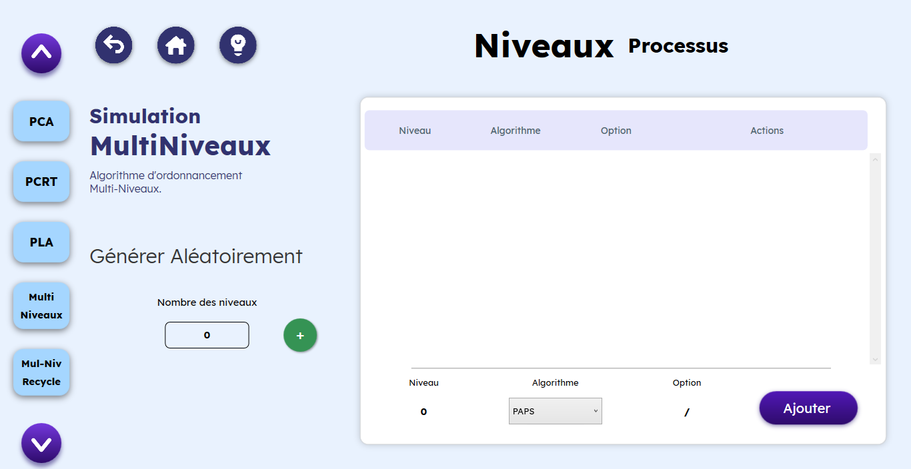
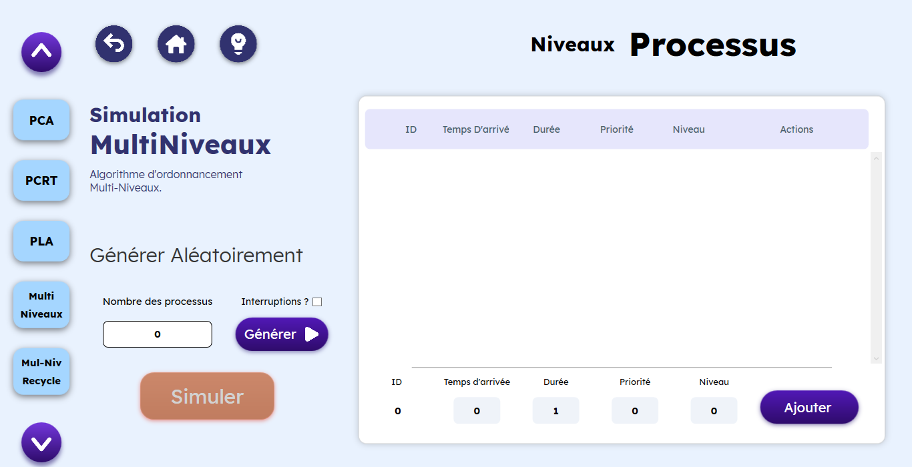
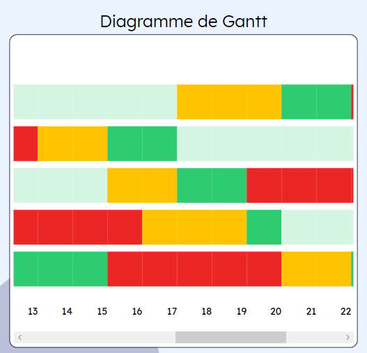

- Commencer avec CPU Simulator
- Introduction à CPU Simulator
- Commencer avec CPU Simulator : Un guide rapide d'utilisation Quand vous commencez CPU Simulator, vous trouvez une page d'accueil, Cliquez sur simuler et choisissez un parmi les algorithmes d'ordonnancement, puis remplissez le tableau des processus, et cliquez sur simuler pour commencer la simulation de votre algorithme choisi.
- Apprende avec CPU Simulator
- La page d'accueil
- La simulation
- Comment lancer la simulation ?
- Comment remplir le tableau des processus ?
- PAPS, PCA, PLA, PCTR
- PSR, PAR
- PARD
- RR
- Slack-Time
- Multi-Niveaux
- La page de simulation
- Le processus
- La page de simulation
- La comparaison
- Fonctionnement des algorithmes
- Algorithme avec réquisition ou sans réquisition ?
- Algorithme sans réquisiton :
- Algorithme avec réquisition :
- Les algorithmes d'ordonnancement
- PAPS C’est un algorithme sans réquisition qui consiste à allouer le processeur au premier processus de la liste des processus prêts.
- PCA C'est un algorithme sans réquisition. Le processeur est alloué au travail le plus court (temps demandé).
- PLA C'est un algorithme sans réquisition. Le processeur est alloué au travail le plus long (temps demandé).
- PCTR C'est un algorithme sans réquisition. Le processeur est alloué au plus court temps restant.
- PSR C'est un algorithme sans réquisition. La priorité : Valeur numérique associée à un processus et permettant de le classer selon son importance dans le système. La priorité statique: attribuée au processus à sa création et reste jusqu’à la fin de l’exécution du processus.
- PAR De même que l'algorithme avec PSR, mais c'est un algorithme avec réquisition. C'est à dire, à tout moment t, si un processus plus prioritaire arrive à la liste des processus prêts, le processus actif (moins prioritaire) se désactive, il rentre à la liste des processus prêts, et le processus le plus prioritaire s'exécute.
- PARD C'est un algorithme avec réquisition. Priorité dynamique: à la création d’un processus , on lui attribut une priorité initiale ensuite cette priorité peut évoluer, par exemple:
- RR Cet algorithme ,avec réquisition, est très utilisé dans les systèmes en temps partagé et les systèmes multiprogrammés. Le processeur est alloué aux processus par tranche de temps appelée ‘quantum de temps’ Le processeur est alloué au premier processus de la file des 'processus prêts' pendant un quantum de temps. Si le processus n'a pas terminé son exécution, il est recyclé dans la file des 'processus prêts‘. Le processeur est alloué à un autre processus :
- A la fin du quantum de temps ➔ interruption horloge.
- Si le processus actif se bloque ➔ attente de ressource physique ou logique.
- Fin d’exécution du processus(fin normale ou erreur ).
- Si Q est très grand (tend vers l'infini) ➔ équivalent à FIFO.
- Si Q est très petit (tend vers 0) ➔ trop de commutations ➔ mauvaise utilisation du processeur.
- Slack-Time C'est un algorithme avec réquisition aussi, on représente ici la notion du temps mort. est un algorithme de planification. Il attribue la priorité en fonction du temps morts d'un processus. Le temps mort est le temps restant après un travail si le travail a été démarré maintenant. Cet algorithme est également connu sous le nom de le moins de laxisme d'abord. Son utilisation la plus courante est dans systèmes embarqués, en particulier ceux avec plusieurs processeurs. Il impose la simple contrainte que chaque processus sur chaque processeur disponible possède le même temps d'exécution, et que les processus individuels ne avoir une affinité avec un certain processeur. C'est ce qui lui confère une adéquation aux systèmes embarqués.
- ML L'algorithme des files multi-niveaux est un algorithme avec réquisition. D'abord, On définit des classes de processus. Puis, on associe à chaque classe :
- MLR L'algorithme des files multi-niveaux avec recyclage est un algorithme avec réquisition. On dispose de n files de 'processus à l’état prêt'.
CPU Simulator est une application Desktop réalisée en 2021 dans le cadre du Projet 2CP permettant une simulation visuelle des processus afin d'aider les étudiants à comprendre le fonctionnement des différents algorithmes d'ordonnancement.
Cliquez sur comparer et choisissez les algorithmes que vous voulez comparer, remplissez le tableau des processus et cliquez sur comparer pour avoir les résultats de comparaison.

Dans la page d'accueil, vous trouvez 2 boutons principaux, un pour faire la simulation visuelle des algorithmes
d'ordonnancement, 
et l'autre pour faire la comparaison entre les algorithmes selon quelques critères.
En dessus, vous trouvez :
A propos : Une petite présentation de notre application, et des membres de l'équipe qui l'a réalisé.

Aide : La page d'aide de l'application.
Pour commencer la simulation, cliquez sur le bouton "Simuler" dans la page d'accueil,
Puis choisissez un algorithme
parmi les 11 algorithmes d'ordonnancement :

cliquez sur le bouton "suivant" 
Pour passer aux algorithmes :
Ensuite, remplissez le tableau des processus,et vous cliquez sur "simuler".
Quand vous cliquez sur l'algorithme , la page de saisie s'ouvre, 
vous trouvez 4 boutons dans l'entête de la page : le bouton "Home"
pour revenir à la page d'accueil, 
le bouton "retour" pour revenir à la Page
des algorithmes,
et le bouton "Hint" pour avoir un guide d'utilisation dynamique,
.
Vous pouvez basculer entre tous les autres algorithmes à partir de la liste des algorithmes à gauche.
Vous avez 2 méthodes pour remplir le tableau des processus:
1\ Vous pouvez générer les données aléatoirement, en précisant le nombre des processus ,
et en spécifiant s'il y'a des
interruptions ou non ,
puis cliquez sur "Générer". 
2\ Vous pouvez remplir toutes les données de chaque processus[ID, Temps d'arrivée, Durée] par vous-même
en entrant les options, puis en cliquant sur le bouton "Ajouter",
Vous pouvez aussi modifier ces données en cliquant sur le bouton modifier,
effectuez vos changement puis cliquez sur modifier pour confirmer vos modifications,
Pour gérer les interruptions, cliquez sur un processus,
Entrez les options de l'interruption et cliquez
sur "+",
Et pour les supprimer, cliquez sur "x" .

De même que les algorithmes PAPS, PCA, PLA et PCTR,
remplissez le tableau, et prenez en considération la priorité quand vous ajoutez un processus,
et quand vous le modifiez.
Concernant l'algorithme PARD, Entrez le temps de mise à jour
et remplissez le tableau des processus.
Pour l'algorithme de Tourniquet, précisez le quantum,
et remplissez le tableau des processus comme déjà montré.
remplissez le tableau, et prenez en considération le temps mort (deadline) quand vous ajoutez un processus, et quand vous le modifiez.

Quand vous cliquez sur l'algorithme Multi-Niveaux/ multi-niveaux avec recyclage, la page de saisie s'ouvre, 
vous trouverez 4 boutons dans l'en tête de la page : le bouton "Home"
"retour","Hint" et "Cours".
1\ Vous pouvez générer les données aléatoirement, en précisant le nombre des niveaux,
puis cliquez sur processus,

Cliquez sur “+” pour ajouter un niveau, et sur “-” pour le supprimer.
Puis cliquez sur processus,
pour passer à la page de saisie des processus,

Et remplissez le tableau des processus selon les algorithmes choisis comme déjà montré.
2\ Pour la saisie manuelle, saisissez [niveau, Algorithme, option[dépend de l'algorithme] ] et cliquez sur Ajouter.
Puis cliquez sur Processus
Puis remplissez toutes les données de chaque processus manuellement selon les algorithmes choisis comme déjà montré.
Dans notre simulation, nous avons représenter le processus par un carré noir, 
on trouve à l'intérieur de ce carré 3 nombres :
Celui du centre : représente l'"ID" du processus, càd son identité.
Celui à droite : représente le temps restant à la fin d'exécution du processus.
Et celui à gauche : représente la priorité du processus, elle est définie pour les algorithmes (PAR, PAR, et PARD), et initialisée à 0 pour tous les autres algorithmes.

Pour lancer la simulation visuelle de l'algorithme choisi, cliquez sur le bouton "Start", 
Vous pouvez aussi faire pause à la simulation en cliquant sur le bouton "Pause", 
ou refaire la simulation en cliquant
sur le bouton "repeat". 
Vous pouvez revenir à tous moments à la page des algorithmes en cliquant sur le bouton "Retour",
ou revenir à la page d'accueil en cliquant sur le bouton "Home".
Pour contrôler la vitesse de la simulation, faites défiler la barre de vitesse. 
La simulation commence en fonction du temps qui s'incrémente,les processus se déplacent entre la liste des
processus prêts, la liste des processus bloqués, et le processeur selon leurs états. 
vous trouvez un diagramme de Gantt pour l'évolution des états des processus : dans chaque unité temps, vous trouvez les états de tous les processus : le vert pour l'état actif
, l'orange pour l'état prêt et le rouge pour l'état bloqué.Faites défiler la barre à droite du diagramme pour voir les états de tous
les processus, et la barre en bas pour changer le temps.

Et vous trouvez la transition des états des
différents processus dans le box "Transition des états". 
Pour afficher les résultats de l'algorithme, cliquez sur le bouton "Résultats".
Le tableau des résultats s'affiche, vous trouvez le temps d'attente, le temps de service, le temps de réponse, et le temps de fin pour chaque processus,
et les temps moyens au-dessous du tableau.
Puis, cliquez sur "terminer" pour quitter le tableau des résultats.
Pour faire la comparaison, cliquez sur le bouton Comparer dans la page d'accueil,
La page de comparaison apparaîtra, 
séléctionnez 2 ou 3 algorithmes d'ordonnancement
que vous voulez comparer en cliquant sur les noms des algorithmes 
puis remplissez le tableau des processus par vous-même ou bien aléatoirement, et enfin cliquez sur comparer.
Vous aurez la page des résultats :
Faites glisser le slider pour voir les résultats de tous les critères [Temps d'attentes, Temps de service, Temps de fin,
Usage de la CPU, Nombre des processus en famine]
vous trouvez en vert le meilleur résultat, en orange le résultat moyen, et en rouge le mauvais résultat.
Cliquez sur le bouton suivant
pour passer à la représentation graphique des résultats.
Vous trouverez le "Spider Chart" qui résume la comparaison entre tous les algorithmes selon les critères.

L'ordonnanceur du CPU permet de décider à quel processus (dans la file d'attente des processus prêts) attribuer le contrôle du CPU. Les stratégies d'ordonnancement peuvent être regrouper en deux catégories : sans réquisition du CPU (stratégie non préemptive) ou avec réquisition du CPU (stratégie préemptive).
Dans cette catégorie, un processus conserve le contrôle du CPU jusqu'à ce qu'il se bloque ou qu'il se termine. Cette approche correspond aux besoins des travaux par lots (systèmes batch). I
Dans cette catégorie, l'ordonnanceur peut retirer le CPU à un processus avant que ce dernier ne se bloque ou se termine afin de l'attribuer à un autre processus. A chaque {quantum} (unité de temps) l'ordonnanceur choisi dans la liste des processus prêts un processus à qui le CPU sera alloué. Cette approche correspond aux systèmes interactifs.
Le processeur ne peut être retiré au processus que s’il le libère volontairement.
la priorité d’un processus est inversement proportionnelle au temps processeur demandé.
PCA est un cas particulier des algorithmes avec priorité.
Priorité=(1/Temps processeur estimé).
la priorité d’un processus est proportionnelle au temps processeur demandé.
PLA est un cas particulier des algorithmes avec priorité.
Priorité=(1/Temps processeur estimé).
L'ordonnanceur choisit le processus le plus prioritaire de la liste des "processus prêts". , un processus conserve le contrôle du CPU jusqu'à ce qu'il se bloque ou qu'il se termine.
• En fonction du temps d’exécution;
• En fonction du nombre d’E/S;
• En fonction du nombre de ressources consommées;
• …
L’évolution de la priorité peut être dans les deux sens : positif ou négatif.
L'ordonnanceur choisit le processus le plus prioritaire de la ou les file(s) des "processus prêts".
La formule du temps mort : temps mort = (durée) - (temps réel depuis le début du cycle) - (temps restant).
• Une priorité (par rapport aux autres classes)
• Définir un algorithme d’ordonnancement
• Le processeur est alloué aux processus de la classe la plus prioritaire.
• On ne change de classe que si la classe la plus prioritaire est vide.
Un processus ne peut pas changer de classe.
A chaque file fi est associé un quantum de temps qi dont la valeur croit avec le rang de la file.
Les nouveaux processus sont rangés dans la file f0.
Lorsqu’un processus de la file fi a épuisé son quantum de temps sans avoir terminé son exécution, il rentre dans la file fi+1.
Un processus de la file fi n’est servi que si toutes les files de rang inférieur à i sont vides.
Cet algorithme favorise les processus courts.